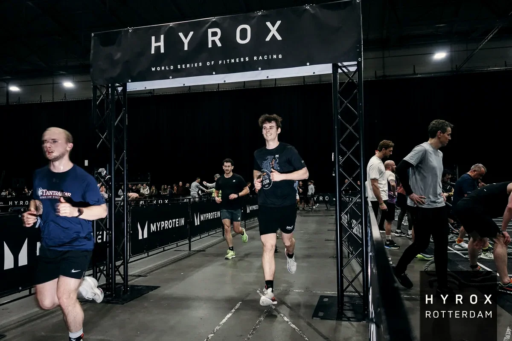
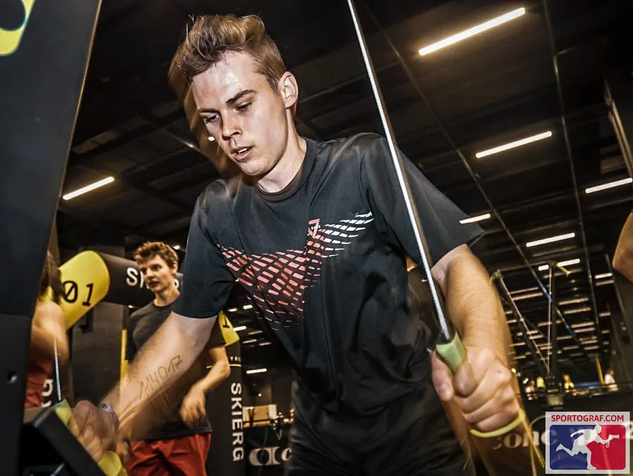
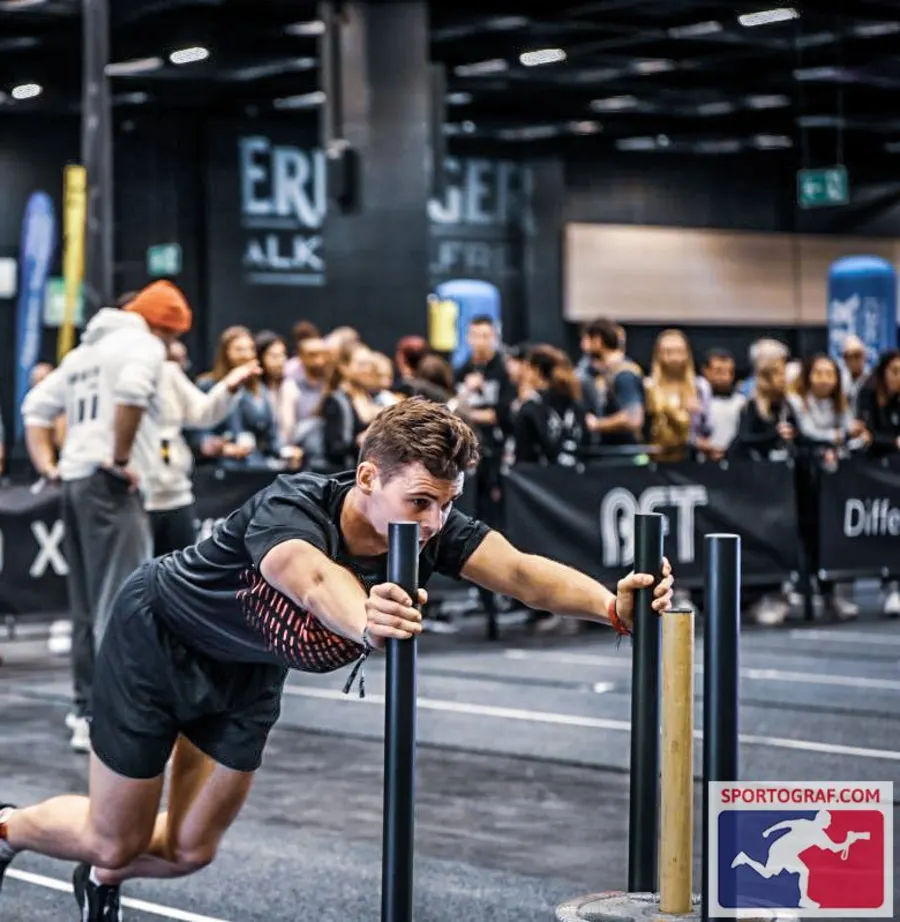
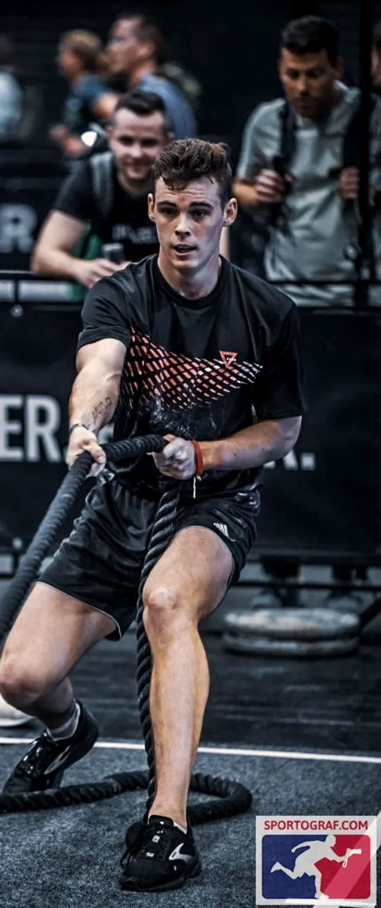
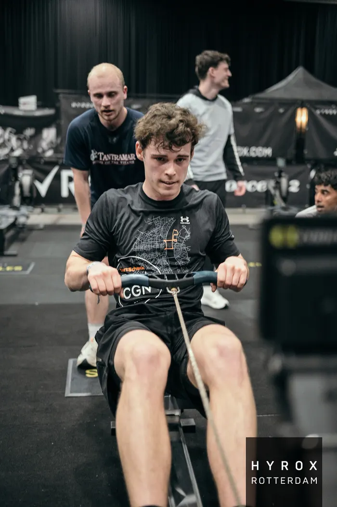
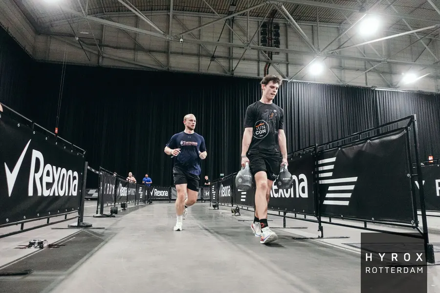
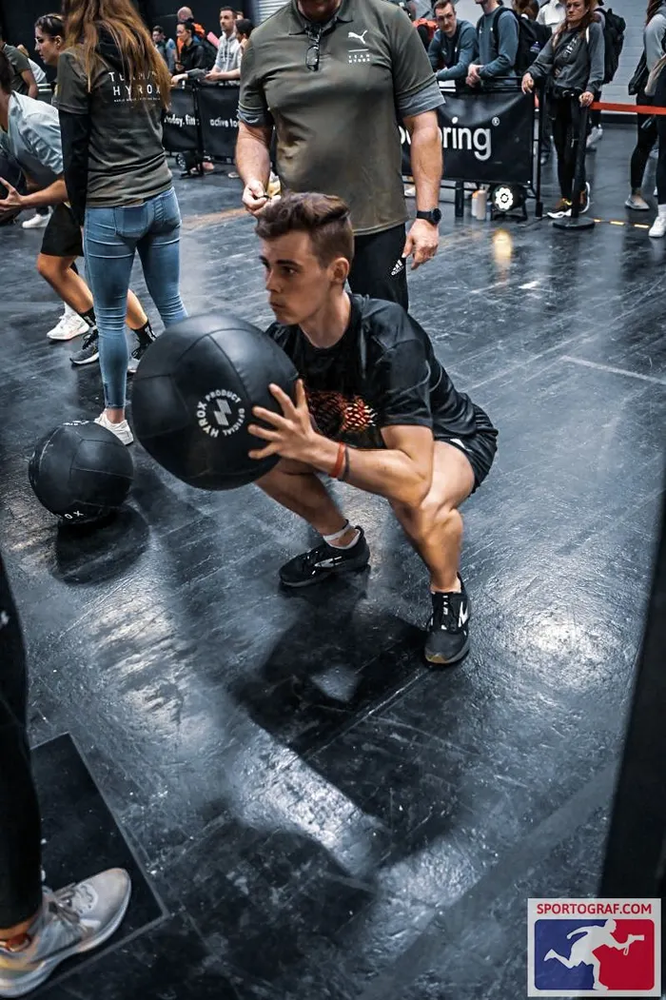

8× 1 km Laufen.
8 Stationen.
Bei Hyrox wechselst du acht Mal zwischen einem Kilometer Laufen und einer Workout-Station. Jede Station hat ihre eigene Technik – und genau da liegen deine Minuten.


SkiErg
1.000 m – Hüftschwung statt Arme: Wer hier nur zieht, bezahlt es auf den nächsten Kilometern.

Sled Push
50 m – Körperposition und Schrittfrequenz entscheiden, ob der Schlitten rollt oder klebt.

Sled Pull
50 m – Rhythmus und Griffkraft: eine der Stationen, an denen Rennen verloren gehen.
Burpee Broad Jumps
80 m – Tempo-Disziplin statt Sprint: Wer zu schnell startet, steht hier still.

Rowing
1.000 m – Schlagzahl und Zuglänge so wählen, dass die Beine fürs Laufen frisch bleiben.

Farmers Carry
200 m – Griffkraft und aufrechte Haltung: hier kannst du atmen und Zeit gutmachen.

Sandbag Lunges
100 m – Schrittlänge und Beinkraft: die Station, die volle Oberschenkel gnadenlos bestraft.

Wall Balls
75/100 Wdh. – das Finale: Technik und Wurfrhythmus entscheiden, ob No-Reps dich Minuten kosten.